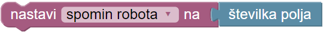
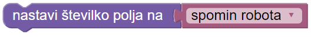

Robotu je uspelo popraviti raketo! Raketa ima še skrivno geslo za prižig v treh sobah. Skrivno geslo je od strmoglavljenja rakete razmetano po tleh. Pomagaj robotu sestaviti skrivno geslo!
To narediš tako, da robota premakneš na polje s številko in ga prosiš, da številko prebere in si jo zapomni. Nato mora robotek iti v ograjeno območje in vanj vnesti številko iz spomina.
Številko na listku shraniš v spremenljivko 'spomin robota' tako: 
Številko v spremenljivki 'spomin robota' pa nato v polje vpišeš tako: 
Robot še vedno išče skrivna gesla. Tokrat mora najprej prebrati številko na prvem listku. Nato mora prebrati še številko na drugem listku, jo prišteti k prvi in vsoto zapisati v ograjeno polje.
Robot še vedno išče skrivna gesla. Tokrat mora najprej prebrati številko na prvem listku. Nato mora prebrati še številko na drugem listku in jo prišteti k prvi. Isto naj naredi tudi za tretjo polje. Na koncu mora vsoto zapisati v ograjeno polje.